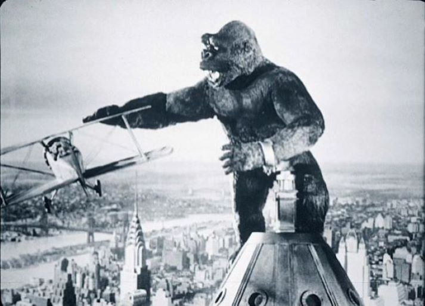

I can't help it, I love this movie! The effort that went into this film for 1933 is simply awe-inspiring with its special effects, the interactions between Ann Darrow (Fay Wray) and the stop motion King Kong and his goofy smile. I can't help but love this film. Carl Denham's (Robert Armstrong) relentles pursuit of fame on his voyage to Skull Island as he searches for King Kong, the chase scenes with various prehistoric creatures, it's a blast. Obviously, it's not as though there aren't aspects of this film that haven't aged. The depcition of indigenous tribes people is still condescending (albeit far less so the the 2005 version), and the line "we've already got enough Gorillas in New York" is particularly jarring, but a reminder of where the US was at the time (and to some extent still is). Still, I can't help but fell a fondness for this film.
9/10